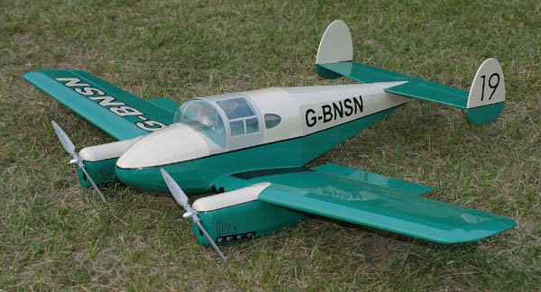
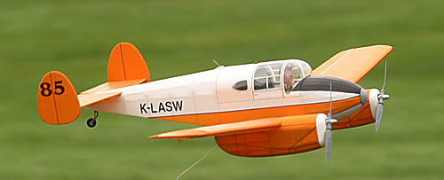
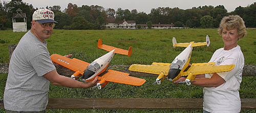

|
The full-scale M.65 Gemini was a delightful little twin built in England right
after WWII. It was built entirely of spruce and plywood, and spanned 36 feet, 2 inches.
Powered by a pair of 100 hp Blackburn Cirrus Minor II engines, the Gemini
offered comfortable and efficient transportation for up to four people at a max criuse of
145 miles per hour. Full fuel range was approximately 1000 miles, making it a perfect ship
for touring the British Isles and the Continent. 170 aircraft were built, with many still surviving.
This model was built from the short-lived Klass Wings laser cut kit designed and sold by Keith Sterner. It is powered with a pair of stock S-400 motors turning Graupner's 6.5x4 scale propellers. With all apologies to the scale police, I did mine up in an "undocumented" scheme using SIG Aerokote Lite. Assuming that this would be an ideal aircraft for a proper English gentleman to use for weekend touring with his lady, I tried to keep it tasteful, while still allowing that it might also go racing from time to time.
NEAT Fair 2005 I built my model in 2005 and had a great time flying loose formation with Keith at the NEAT Fair that fall. Originally I had great plans for plug-in landing gear to save the weight of retracts. Then then I realized I fly almost exclusively off grass, and already have a lot of planes for touch and goes. The only major modification I made was to the rear turtledeck. I doubled the stringer count to get the spacing more in line with those on the nose. I also replaced the vacuum formed nose bowls with ones made from balsa, for a better fit and to use the same covering for a perfect color match. For those who missed it, the NEAT Fair was great this year as well. Near perfect weather with light and variable breezes all weekend. I got another couple of flights on my Gemini, and it was the only one there that I noticed. |
| Wing Span: | . | 40 in. |
| Weight: | . | 20.6 oz. |
| Battery: | . | Kokam 4S 910mAh Li-Poly |
| Power: | . | 95 W/lb full throttle |
| Duration: | . | 20+ minutes |

I was fortunate to fly this Klass Wings prototype in the fall of 2004

Keith Sterner and his wife Annette show off the Klass Wings prototypes
Copyright 2006, Thayer Syme. All rights reserved